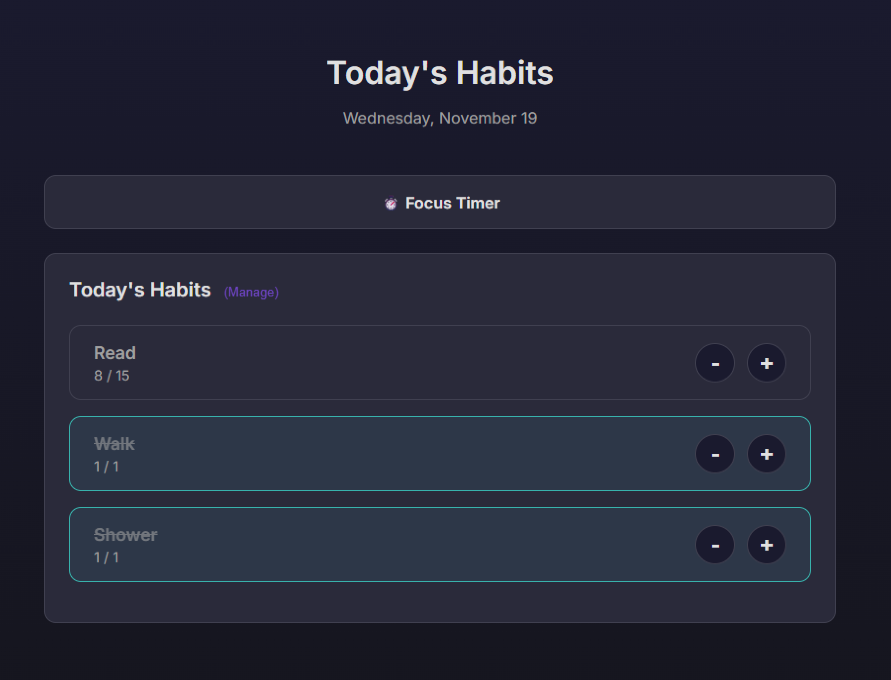
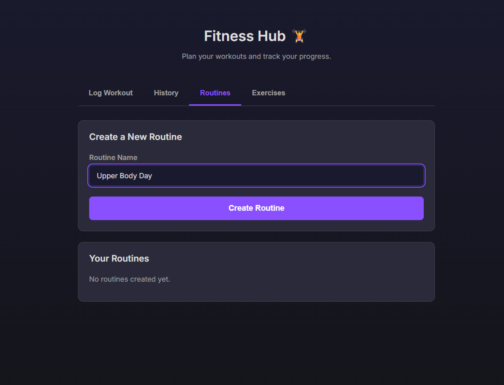

Product Design & Dev
Solis App
A unified dashboard for personal growth and household management.

Project Data
Role
Full Stack Developer
Year
2024
Tech Stack
- Python (Flask)
- SQLite Database
- Jinja2 & JS
- Chart.js
The Problem
Personal organization apps are often fragmented. A user might need one app for habit tracking, another for gym logs, and a third for shared family chores. This context switching creates friction. I wanted to build Solis: a unified "life OS" that brings personal growth and household management into a single, cohesive interface.
The Solution
Solis is a dashboard that simplifies complex data into digestible graphs. I focused heavily on high-contrast visuals for readability in bright environments and a responsive layout for mobile checking.
Interface Design

Main Dashboard

Fitness Tracker
Key Features
The application handles complex logic behind a simple UI:
- Household Sync: Users can invite family members to join their "Household," enabling a shared Shopping List and Chore Chart.
- Fitness Hub: Custom workout routines linked directly to habit completion logic.
- Smart Journaling: A "Win of the Day" prompt and daily reflection that saves to a history database.
Outcome
Solis is a fully functional web application. Building it enhanced my ability to think systematically—understanding how a button on the frontend interacts with the database model on the backend. It bridges the gap between visual design and software engineering.